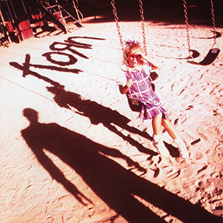
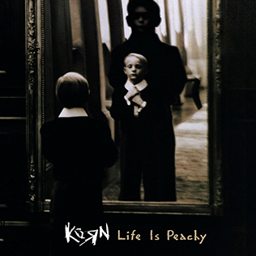

Korn, est un groupe de nu metal américain, originaire de Bakersfield, en Californie.
Le groupe se compose de Brian « Head » Welch et James « Munky » Shaffer à la guitare, de Reginald « Fieldy » Arvizu à la basse, de Jonathan Davis au chant et Ray Luzier à la batterie.
Albums

Sortie: 11 octobre 1994
Enregistré: mai - juin 1994 au Indigo Ranch Studios à Malibu, en Californie
Durée: 65:51
Langue: Anglais
Genre: Nu metal, groove metal, metal alternatif
Format: CD, téléchargement
Producteur: Ross Robinson
Label: Immortal Records/Epic Records



Photos
Tours
Oct 25, 2024
CHI Health Center Omaha
455 N 10th StOmaha
NE 68102
Oct 27, 2024
Xcel Energy Center
199 Kellogg Blvd
Saint Paul, MN 55102
Contacts